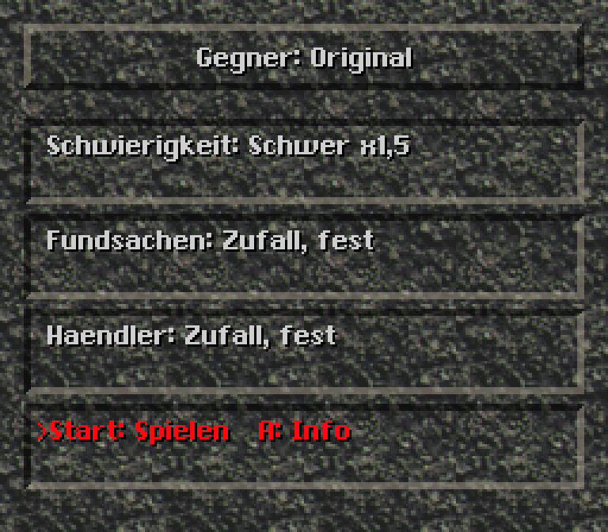
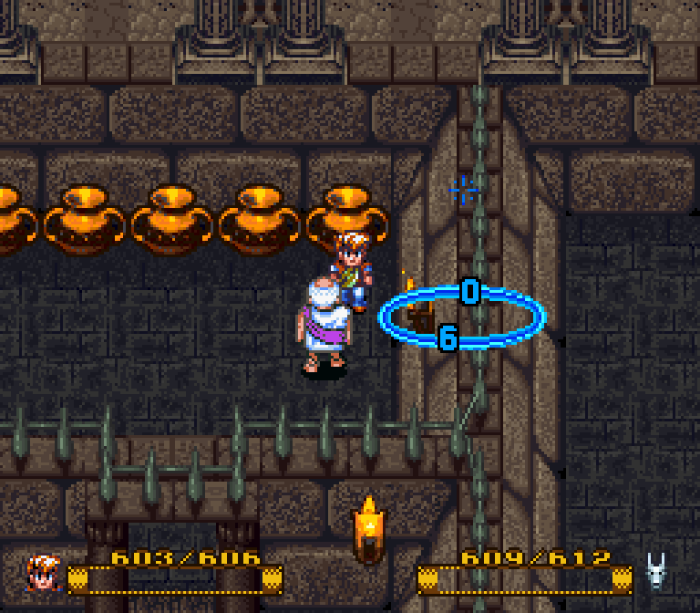
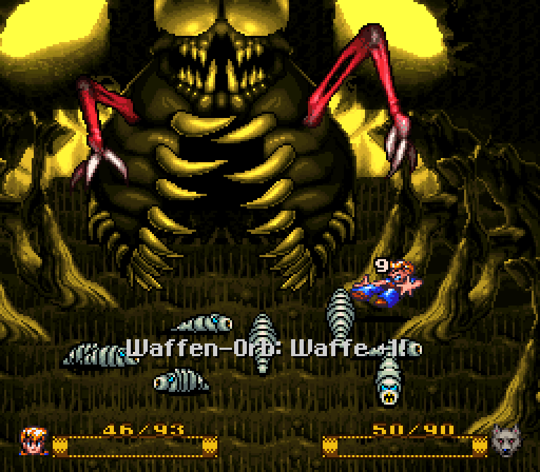
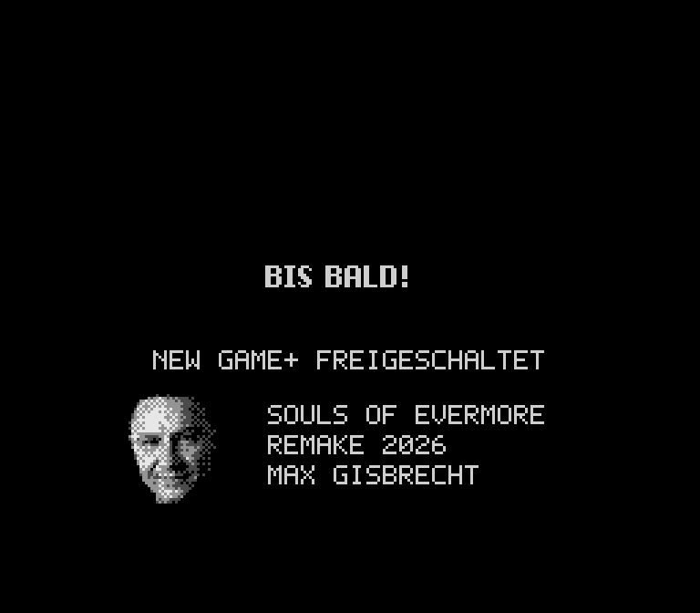
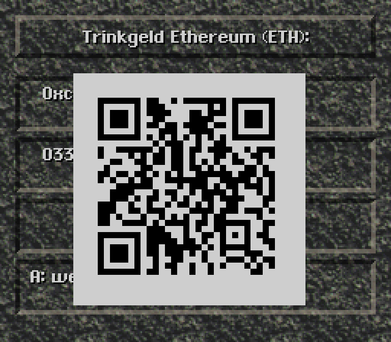

Was ist neu?

Einstellungen vor dem Start
Gegner original, ähnlich, aus dem Gebiet oder komplettes Chaos – fest oder je Raum neu. Schwierigkeit von Normal bis Albtraum x10, Fundsachen und Händler wahlweise zufällig.

Tod wie bei Dark Souls
Statt Hauptmenü wachst du am Raumeingang auf. Dein Geld bleibt an der Todesstelle liegen – ein blauer Kreis zeigt sie. Hol es zurück, bevor du noch einmal stirbst!

Der Goldene Vulgor
Nach dem ersten Sieg wartet einmal pro Durchgang ein goldener Vulgor – fünfmal so stark. Wer stirbt, landet vor dem Eingang und versucht es erneut.

Waffen-Orb & Vulgors Rache
Der Sieg bringt einen Waffen-Orb: deine ausgerüstete Waffe wird +1. Danach stürmen zehn starke Raptoren die Arena.

New Game+
Nach dem Abspann startest du mit Level, Waffen und Ausrüstung neu – die Gegner werden mit jedem Durchgang stärker, Waffen sammeln +N.

Und noch mehr
Echte Waffenkraft im Menü, Startwaffe je Modus (bis zum Laserschwert), Erfahrung und Geld je nach Schwierigkeit, Infoseite mit QR-Codes im Einstellungsmenü.
So spielst du
- Besorge dir deine eigene deutsche ROM von Secret of Evermore (SNES). Prüfsumme der passenden Datei (ohne Kopfteil):
CRC32 27F60E77. - Lade den Patch (BPS) herunter.
- Öffne den Rom Patcher JS im Browser (oder Floating IPS / Flips), wähle deine ROM und den Patch und klicke auf „Patch anwenden“.
- Starte die neue ROM in deinem Emulator (z. B. OpenEmu, snes9x, Mesen, RetroArch). Im Titelbild steht dann SOULS of EVERMORE.
- Bei „Neues Spiel“ erscheint das Einstellungsmenü: Gegner, Schwierigkeit, Fundsachen und Händler wählen – mit Start geht’s los.
Schwierigkeitsstufen
| Stufe | Gegner (Leben & Angriff) | Erfahrung & Geld |
|---|---|---|
| Normal | wie im Original | wie im Original |
| Schwer | x1,5 | x1,5 |
| Sehr schwer | x2 | x2 |
| Extrem | x3 | x3 |
| Wahnsinn | x5 | x5 |
| Albtraum | x10 | x10 |
Kontakt & Trinkgeld
Souls of Evermore ist ein Hobby-Projekt von Max Gisbrecht. Fehler gefunden? Schreib mir an numdoks@gmail.com – am besten mit Screenshot und Spielstand. Wenn dir die Mod gefällt, freue ich mich über ein Trinkgeld:
0xcDf1355E4365A2ad842F0333E4737372D2128064bc1pfky3u0htczylv8tdf2jjcclhdc005e294rljvcwutcwjgqak67rswl2nv33paG1KXBdFamy7cBVxvHj1yKQ9XGgm4bWHzYQhDoqNKJ